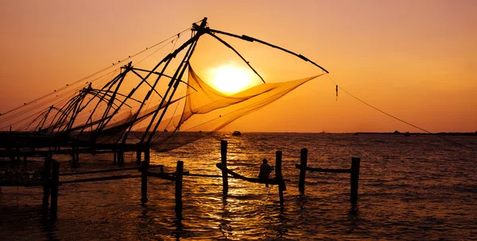

Thiruvananthapuram (or Trivandrum) is the capital of the southern Indian state of Kerala. It's distinguished by its British colonial architecture and many art galleries. It’s also home to Kuthira Malika (or Puthen Malika) Palace, adorned with carved horses and displaying collections related to the Travancore royal family, whose regional capital was here from the 18th–20th centuries.
Read More
Kollam is a city in the state of Kerala, on India's Malabar Coast. It’s known as a trade hub and for its beaches, like lively Kollam and secluded Thirumullavaram. Sardar Vallabhbhai Patel Police Museum has artifacts tracing the history of the police force. Nearby, Ashtamudi Lake is a gateway to the Kerala backwaters, a network of waterways rich with vegetation. The striped 1902 Tangasseri Lighthouse has ocean views.
Read More
Pathanamthitta, is a municipality situated in the Central Travancore region in the state of Kerala, India, spread over an area of 23.50 km². It is the administrative capital of Pathanamthitta district.
Read More
Alappuzha (or Alleppey) is a city on the Laccadive Sea in the southern Indian state of Kerala. It's best known for houseboat cruises along the rustic Kerala backwaters, a network of tranquil canals and lagoons. Alappuzha Beach is the site of the 19th-century Alappuzha Lighthouse. The city's Mullakkal Temple features a traditional design. Punnamada Lake's snake boat races are a well-known annual event.
Read MoreKottayam is a city in the Indian state of Kerala. Flanked by the Western Ghats on the east and the Vembanad Lake and paddy fields of Kuttanad on the west. It is the district headquarters of Kottayam district, located in south-west Kerala.
Read MoreIdukki district is a densely forested, mountainous region in the south Indian state of Kerala. In the north, Anamudi mountain towers over Eravikulam National Park, where the rare, blue Neelakurinji flower blooms every 12 years. Nearby, Munnar is a hill station known for its sprawling tea plantations and Tea Museum. Farther south is the vast, curved Idukki Dam and Periyar National Park, a tiger and elephant reserve.
Read MoreErnakulam, IPA; ISO: Eṟaṇākuḷaṁ, in Malayalam: എറണാകുളം, is one of the 14 districts in the Indian state of Kerala, that takes its name from the eponymous city division in Kochi.
Read More
Thrissur is a city in the south Indian state of Kerala. It's known for sacred sites and colorful festivals. In the center is Vadakkumnathan Temple, dedicated to Lord Shiva and adorned with murals. The ornate, Indo-Gothic Our Lady of Dolours Basilica is nearby. To the north, Thiruvambady Temple is home to several elephants. Sakthan Thampuran Palace houses an archaeology museum with bronze statues and ancient coins.
Read MorePalakkad District is one of the 14 districts in the Indian state of Kerala. It was carved out from the southeastern region of the former Malabar District on 1 January 1957. It is located at the centre of Kerala. It is the largest district in the state since 2006. The city of Palakkad is the district headquarters.
Read MoreMalappuram, is one of the 14 districts in the Indian state of Kerala, with a coastline of 70 km. It is the most populous district of Kerala, which is home to around 13% of the total population of the state. The district was formed on 16 June 1969, spanning an area of about 3,554 km.
Read MoreKozhikode, or Calicut district, is one of the 14 districts in the Indian state of Kerala, along its Southwestern Malabar Coast. The city of Kozhikode, also known as Calicut, is the district headquarters. The district is 67.15% urbanised.
Read MoreWayanad is a rural district in Kerala state, southwest India. In the east, the Wayanad Wildlife Sanctuary is a lush, forested region with areas of high altitude, home to animals including Asiatic elephants, tigers, leopards and egrets. In the Ambukuthi Hills to the south, Edakkal Caves contain ancient petroglyphs, some dating back to the Neolithic age.
Read MoreKannur, is one of the 14 districts along the west coast in the state of Kerala, India. The city of Kannur is the district headquarters and gives the district its name. The old name, Cannanore, is the anglicized form of the Malayalam name "Kannur"
Read MoreKasaragod is one of the 14 districts in the southern Indian state of Kerala. Its northern border Thalappady is located just 10 km south to Ullal, which is the southernmost portion of the major port city Mangalore, on the southwestern Malabar coast of India.
Read More